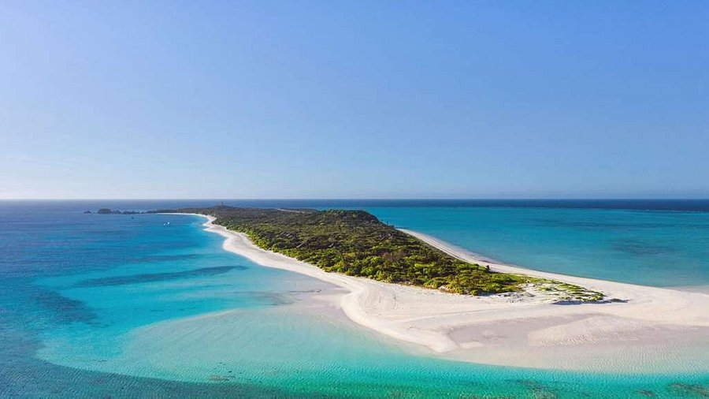

Blissfully marooned in the Cuyo Archipelago of northern Palawan in the Philippines, Amanpulo is a private island fringed with white sand beaches and pristine reefs. Offering a back to nature experience in supreme comfort and privacy, this tropical paradise is lapped by calm clear seas ideal for water sports, while sandy tracks lead to deserted coves and jungle-clad lookouts. Set on its own private island in the Sulu Sea, Amanpulo is the epitome of a tropical paradise. The resort began its 20th anniversary celebrations in December 2013, enjoying a beautiful, full-capacity festive season, and will continue to mark its anniversary year. Increasing access to Amanpulo, Philippine Airlines has now launched direct flights between London and Manila five times a week A private island with its own airstrip, accessible only via private flights from Manila. With only 42 Casitas and 18 Villas, guests are immersed in a secluded hideaway in a world all their own. A paradisiacal private island of unspoiled tropical wilderness, fringed by the white sand beach and turquoise waters, it offers back-to-nature experiences in supreme comfort and privacy. Protecting the island and its neighboring communities are at the heart of Amanpulo, taking sustainability to the forefront through sustainable operations, employment of local staff, and marine conservation.Fringed with pearl-white sand and the turquoise waters of the Philippines on a private island, with multiple restaurants and a hilltop Aman Spa. Book a Casita for three nights or more and enjoy exclusive benefits allowing you to fully appreciate the natural beauty and seclusion of this remarkable destination. The view from the Beachclub’s main pavilion is among Amanpulo’s most photographed – an endless expanse of clear turquoise water dotted with islands. Delight in this idyllic spot by choosing a table beneath its iconic roof, on its tree-shaded deck, or in between sun loungers on the shore.